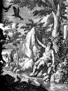

|
|
|
1 Kings 17
|
|
| 17:1
And Elijah the Tishbite, who was of the inhabitants of Gilead, said unto
Ahab, As the LORD God of Israel liveth, before whom I stand, there shall not
be dew nor rain these years, but according to my word. |
 (17:1) "There shall not
be dew nor rain these years" (17:1) "There shall not
be dew nor rain these years"
How long was Elijah's drought?
God's 92nd Killing
|
| 17:2
And the word of the LORD came unto him, saying, |
|
| 17:3
Get thee hence, and turn thee eastward, and hide thyself by the brook
Cherith, that is before Jordan. |
|
| 17:4
And it shall be, that thou shalt drink of the brook; and I have commanded
the ravens to feed thee there. |
|
| 17:5
So he went and did according unto the word of the LORD: for he went and
dwelt by the brook Cherith, that is before Jordan. |
|
| 17:6
And the ravens brought
him bread and flesh in the morning, and bread and flesh in the evening;
and he drank of the brook. |
 (17:6) "The ravens brought
him bread and flesh in the morning, and bread and flesh in the evening." (17:6) "The ravens brought
him bread and flesh in the morning, and bread and flesh in the evening."
Ravens bring Elijah bread and flesh for breakfast and dinner.
Elijah fed by ravens
(Unknown, 1712)
|
| 17:7
And it came to pass after a while, that the brook dried up, because there
had been no rain in the land.
|
| 17:8
And the word of the LORD came unto him, saying,
|
| 17:9
Arise, get thee to Zarephath, which belongeth to Zidon, and dwell there:
behold, I have commanded a widow woman there to sustain thee.
|
| 17:10
So he arose and went to Zarephath. And when he came to the gate of the
city, behold, the widow woman was there gathering of sticks: and he called
to her, and said, Fetch me, I pray thee, a little water in a vessel, that I
may drink. |
|
| 17:11
And as she was going to fetch it, he called to her, and said, Bring me, I
pray thee, a morsel of bread in thine hand. |
|
| 17:12
And she said, As the LORD thy God liveth, I have not a cake, but an
handful of meal in a barrel, and a little oil in a cruse: and, behold, I am
gathering two sticks, that I may go in and dress it for me and my son, that
we may eat it, and die. |
|
| 17:13
And Elijah said unto her, Fear not; go and do as thou hast said: but make
me thereof a little cake first, and bring it unto me, and after make for
thee and for thy son. |
|
| 17:14
For thus saith the LORD God of Israel, The barrel of meal shall not waste,
neither shall the cruse of oil fail, until the day that the LORD sendeth
rain upon the earth. |
|
| 17:15
And she went and did according to the saying of Elijah: and she, and he,
and her house, did eat many days. |
|
| 17:16
And the barrel of meal wasted not, neither did the cruse of oil fail,
according to the word of the LORD, which he spake by Elijah. |
|
| 17:17
And it came to pass after these things, that the son of the woman, the
mistress of the house, fell sick; and his sickness was so sore, that there
was no breath left in him. |
|
| 17:18
And she said unto Elijah, What have I to do with thee, O thou man of God?
art thou come unto me to call my sin to remembrance, and to slay my son? |
|
| 17:19
And he said unto her, Give me thy son. And he took him out of her bosom,
and carried him up into a loft, where he abode, and laid him upon his own
bed. |
|
| 17:20
And he cried unto the LORD, and said, O LORD my God, hast thou also
brought evil upon the widow with whom I sojourn, by slaying her son? |
|
| 17:21
And he stretched himself upon the child three times, and cried unto the
LORD, and said, O LORD my God, I pray thee, let this child's soul come into
him again. |
|
| 17:22
And the LORD heard the
voice of Elijah; and the soul of the child came into him again, and he
revived. |
 (17:22) "The LORD heard the voice of Elijah; and the soul of the child came into him again,
and he revived." (17:22) "The LORD heard the voice of Elijah; and the soul of the child came into him again,
and he revived."
Elijah resurrects the widow's son.
Was Jesus the first to rise from the dead?
Is death final?
|
| 17:23
And Elijah took the child, and brought him down out of the chamber into
the house, and delivered him unto his mother: and Elijah said, See, thy son liveth.
|
| 17:24
And the woman said to Elijah, Now by this I know that thou art a man of
God, and that the word of the LORD in thy mouth is truth.
|
|
|


{kind=link}